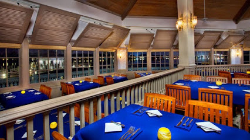
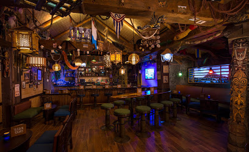
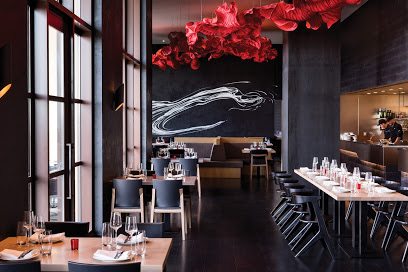
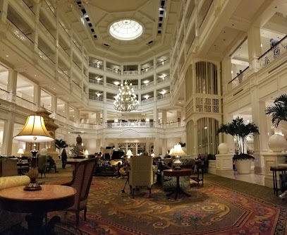
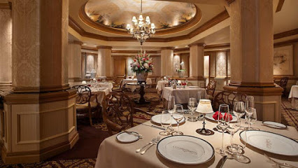

Great restaurants around the area
Where to eat?
Narcoossee's is a disney eatery with specialty choice seafood offers a cozy dining room with views of Magic Kingdom. It is open from 5-9:30PM. It includes great cocktails, coffee, desserts, and tea. The location is 4401 Disney's Grand Floridian, Orlando, FL 32830. |
 |
 |
Trader Sam's Grog Grotto is a great place to eat at. It has a festive tiki bar at the Polynesian Resort featuring tropical decor, themed drinks & simple bar fare. The restaurant includes fast service, great cocktails, casual, and very cozy. You will not be disappointed if you go here. It is located at 1600 Seven Seas Drive, Orlando, FL 32830 |
Capa is a swanky restaurant in the Four Seasons Hotel has modern tapas, steak & an outdoor lounge. Hours are 5-11PM. It includes great coffee, desserts, live music, and rooftop seating. It is located at 10100 Dream Tree Blvd, Orlando, FL 32836. |
 |
 |
Grand Floridian Cafe is a bright American restaurant at Disney's Grand Floridian Resort & Spa offering pool & garden views. It is open 7:30AM-9PM. It includes great coffee, great tea selection, great wine list, and a fireplace. It is located at 4401 Floridian Way, Orlando, FL 32836. |
Victoria & Albert's is a high-end Disney destination for fixed-price New American cuisine in Victorian-style environs. You must make reservations 72 hours in advance. It is family-friendly and cozy. It includes great coffee and desserts. It is located at 4401 Floridian Way, Orlando, FL 32830. |
 |
Make sure you don't get hungry!